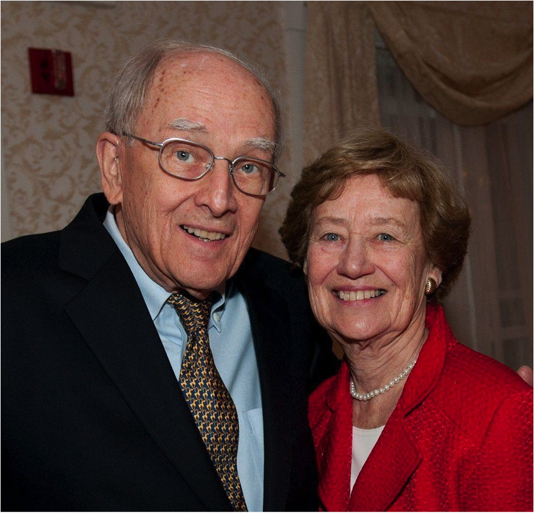
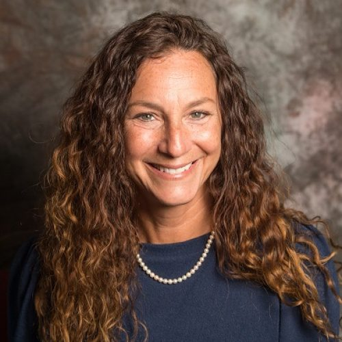
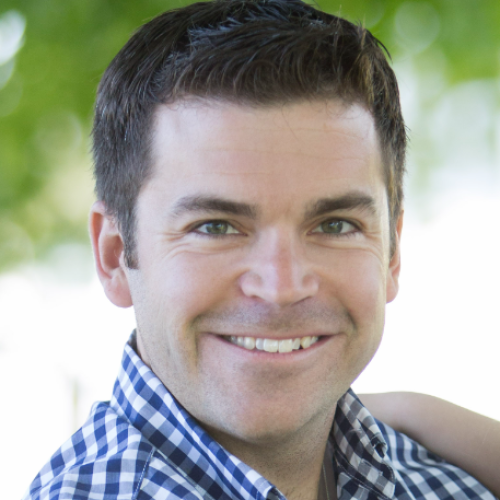
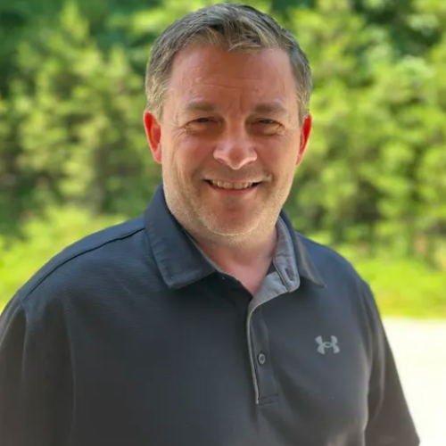

About Us
“When one sees the enthusiasm and engagement of students and teachers, that is the best test of success.”
- Ted Damon, FounderOur Mission
The mission of the Education Foundation of the Kennebunks and Arundel is to work with the schools of RSU 21 to inspire and ignite young minds by funding creative and innovative programs for students and professional development for teachers and other staff.
We Inspire and Ignite
The Education Foundation of the Kennebunks and Arundel (EFKA) is dedicated to enhancing academic excellence in grades K-12 in the public schools of Kennebunk, Kennebunkport, and Arundel. EFKA works in partnership with administrators, teachers and community members to help provide students with inspiring, creative and innovative programs.
EFKA is an independent, charitable 501(c)(3) organization, governed by an unpaid Board of Directors. EFKA has no office space or paid staff; all work is conducted by volunteers including young people, parents, grandparents, and other individuals—both active and retired, both year-round and part-year residents.
Everything we accomplish on behalf of our children is made possible by our communities’ generous gifts of time and money. EFKA raises private funds from residents and other generous individuals and from area businesses and non-profits.
Grants are of two types. Professional development grants aim to enhance knowledge and application of best practices in education. Grants for student programs aim to increase students' ability to succeed in the 21st century economy by supporting hands-on learning and cutting-edge ideas.
For every dollar raised, 84 cents is spent on grants for K-12 students and staff.
History & Founder
Ted Damon, Founder
August 5, 1929 – May 25, 2020
In 2005 all field trips in the Kennebunk school system were canceled due to a lack of funds. Funding for in-school projects was curtailed with some teachers using their own money for classroom projects. The towns of Falmouth and Cape Elizabeth, feeling the same constraints, had established independent organizations to financially support their schools called ‘education foundations’. When visiting Cape Elizabeth Education Foundation, they quickly and generously brought us up to date on how to start an education foundation.
To get closer to the Kennebunk situation, Ted Damon (then age 76) was allowed to enroll as a Freshman student for a school year. He attended classes, participated in classroom discussions, read the books, etc. Damon found that teachers and students were seeking ways to be more fully engaged in learning through hands-on, experiential, real-world, creative experiences.
With four former United Way associates, we formed the foundation in 2006 with the objective of helping teachers to fund field trips and classroom projects. We found many parents willing and ready to chip in financially to support the effort – that remains true to this day. Most of the 300 projects the Foundation has funded originate with teachers and some with the District administration.
Ted passed away on May 5, 2020. While his presence is missed, his spirit and legacy will continue to spark creativity for the students, teachers, and staff of the RSU21 school district.

The Year in Review
Check out our Annual Review to see our financial details and grants in action.
Download PDFBoard of Directors
Our dedicated board of directors volunteers their time monthly to manage the foundation's operations, review grants, and interface with the school district.

Jennifer Foy
Board President
Kirsten Camp
Treasurer

Christian Babcock
Board Member
Alice Eagelson
Board Member

Paul Rasmussen
Board Member
Brogan Poulin
Board Member
Angie Welch
Board Member
Frequently Asked Questions
The Education Foundation of the Kennebunks and Arundel— EFKA— is an independent, non-profit, 501(c)(3) tax-exempt organization founded in 2006 to enrich the public schools in the Kennebunks and Arundel. The Foundation helps foster innovation, creativity, and academic excellence by channeling private funds into areas that fall outside the school budget.
Since June 2006 the Foundation has invested more than $1,000,000 in the six schools of Kennebunk, Kennebunkport and Arundel. Grant funds were provided for student enrichment and professional development.
The EFKA’s mission is to enhance educational excellence. The Board continues to focus funding on creative and innovative programs for students K-12.
86% of Foundation funds go directly to grants for educational programs and professional development. We remain committed to directing the maximum amount of our funds to programs. We have no paid staff or office space. (Note: On average, 84-86% of raised funds are directly spent on student and staff grants).
The Foundation makes total grants of $80,000 to $100,000 each year.
Shrinking federal and state funding over the last fifteen years has posed significant challenges to public education, severely limiting the opportunities to fund innovative and creative programs.
Funds are raised from generous individuals, business sponsors, private foundations, and community members by direct appeals and through community-wide educational and social events.
The differences are as follows:
- The EFKA’s mission is focused on programs that strengthen educational excellence, and requests for EFKA grants are assessed against established criteria. The PTAs’/PTOs’ broader mandates enable them to fund not only academic programs but also important non-academic items such as playground structures.
- The EFKA serves all six RSU#21 schools, whereas the schools are served by four separate PTAs/PTOs.
- The EFKA raises funds from individual donors, businesses and foundations. The PTAs/PTOs raise funds through membership dues and through social events designed to increase parent involvement in the public schools.
- Brings new ideas, pilot programs, people, and opportunities into the schools.
- Funds enrichment programs for students that engage, challenge, inspire, and prepare them for the 21st century.
- Funds professional development for RSU#21 staff.
- Builds community awareness of accomplishments occurring in the schools.
- Supports innovative ideas by providing feedback, encouragement, networking assistance, and financial support to individuals submitting proposals.
- Combines the ability to work within the school system with the capacity to raise public monies.
We Value Your Partnership
Help ignite the spark and make a difference to our community by giving the invaluable gift of your time and talents. Parents, teachers and community members, you can support the education of our students.
Get Involved Today!